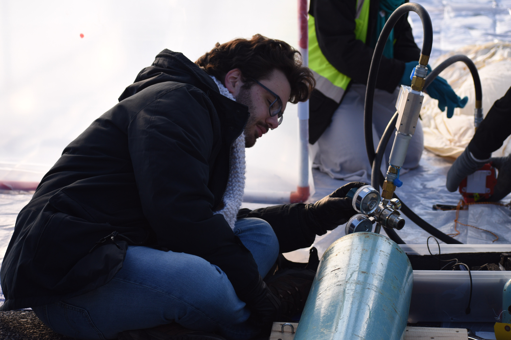

JHU Applied Physics Lab Intern
As a guidance, navigation, and controls intern at the Johns Hopkins Applied Physics Lab, I spent two summers working with Kalman filter error models for inertial navigation systems. I implemented novel filter measurements for covariance analysis software, I improved model fidelity of filters used for ground-testing sensor systems, and I helped develop software to generate estimated trajectories from sensor data.
Additionally, I developed a custom MongoDB database for storing and querying flight test data, which was capable of automatically adjusting database structure to accept novel file types without needing user input. I also developed a GUI tool for querying this database for users without MongoDB experience.


UMD CDCL
I worked with the UMD Collective Dynamics and Controls Laboratory for 3 years on computer vision algorithms to help robots and humans navigate and engage with a dynamic world.
Through the Aerospace Engineering Research Opportunity Scholars program, I spent a summer using OpenCV to provide real-time guidance and tracking telemetry to allow two aquatic fish robots to move in formation to gain hydrodynamic benefits.
For my honors research project and as part of the DARPA Triage Challenge, I worked on developing software for our Sensor Platform for Updated Diagnosis (SPUD), a hardware platform that aimed to use infrared and depth video feeds to estimate casualty vital signs during a theoretical mass casualty event.
UMD Balloon Payload Program
During undergraduate, I helped launch high-altitude scientific balloons with the UMD Balloon Payload Program. I was the payload lead on Pterodactyl. a sensor suite designed by Montana State University that used atmospheric sensors to track atmospheric gravity waves during the 2023 solar eclipse.
Additionally, on launches I could be found working the inflation regulator, moving and using high-pressure helium tanks to help get the balloon off the ground on schedule.
